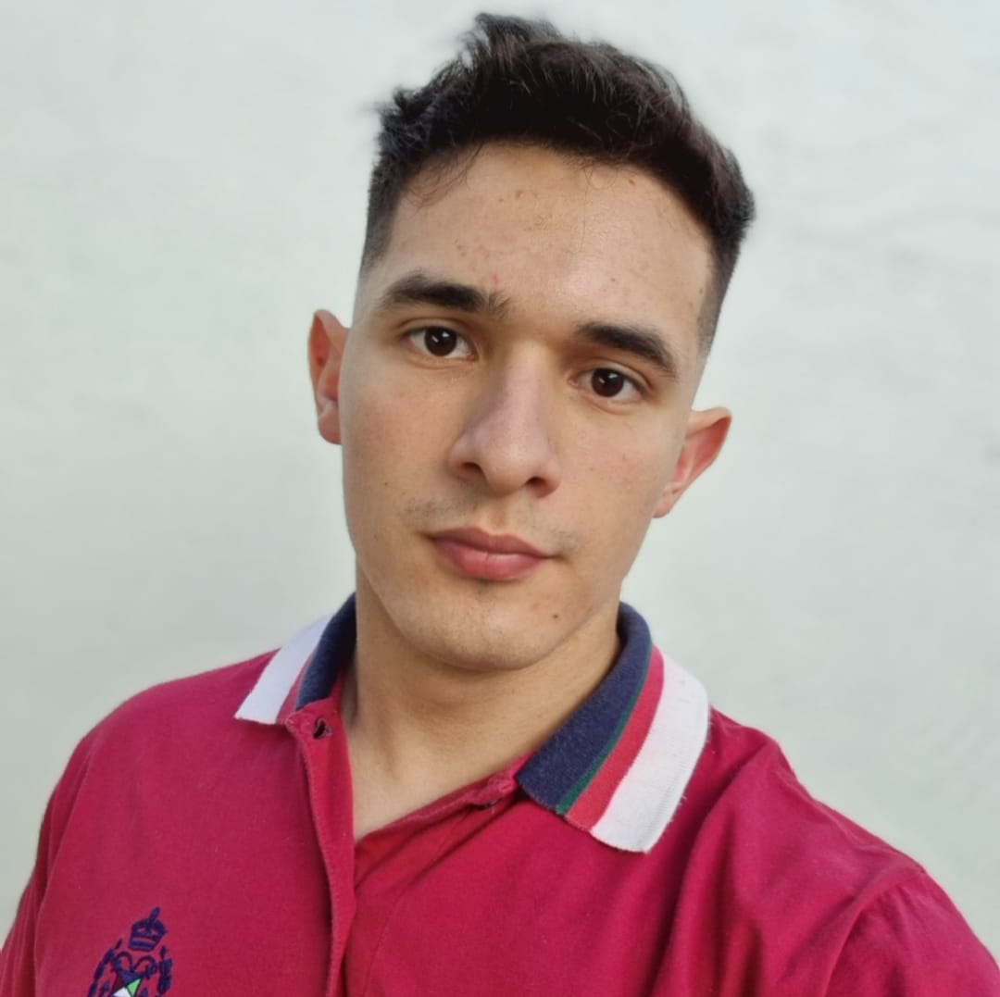
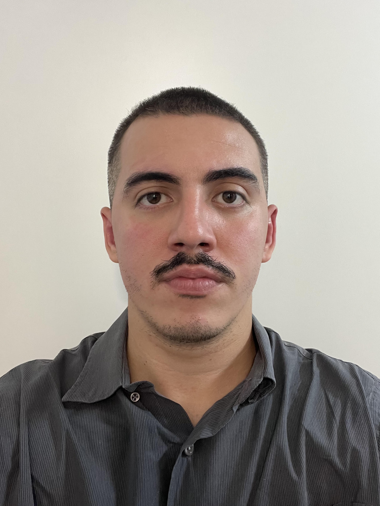

Grupo de Láser, Óptica de Materiales y Aplicaciones Electromagnéticas
Estudiamos cómo la luz, el ultrasonido y los campos electromagnéticos interactúan con la materia, y convertimos ese conocimiento en sensores y técnicas de medición para la industria, la energía y el ambiente.
Departamento de Física · Facultad de Ingeniería, Universidad de Buenos Aires
El grupo
Área temática: óptica, láser, electromagnetismo aplicado, interacción del campo electromagnético con fluidos complejos y polímeros, y enseñanza.
El GLOMAE reúne varios laboratorios de larga trayectoria en el Departamento de Física de la FIUBA, junto con investigadores e investigadoras que se sumaron al grupo con el tiempo.
Trabajamos en optoacústica, polarización, sistemas ópticos, metrología, nanotecnología, caracterización y ensayos no destructivos, incluyendo sistemas poliméricos y fluidos complejos. También investigamos en enseñanza de la física.
Esta labor está ligada a la formación de recursos humanos a través de pasantes, becarios y tesistas de grado y posgrado.


Líneas de investigación
- Métodos ópticos y fotoacústicos para metrología, ensayos no destructivos y análisis de muestras ambientales y agrícolas. Desarrollo de nuevas técnicas de detección y caracterización de nanopartículas.
- Caracterización y procesamiento de materiales con métodos electromagnéticos y ultrasónicos.
- Técnicas de sensado y caracterización multiparamétricas.
- Integración de técnicas de Machine Learning a sensores multiparamétricos.
- Modelos de propagación de ondas electromagnéticas en materiales lineales: isótropos, anisótropos, activos, absorbentes y metamateriales. Modelos analíticos, numéricos y de líneas de transmisión.
- Polarización en materiales. Dispositivos ópticos para control de la polarización: retardadores, polarizadores y sistemas de adquisición.
- Propiedades eléctricas y ultrasónicas de materiales: biocombustibles, fluidos complejos y polímeros.
- Caracterización de superficies rugosas y medición de tamaño de partículas por métodos ópticos.
- Degradación de colorantes y contaminantes.
- Medición de viscosidad de macromoléculas.
- Medición de tensión interfacial y viscosidad en sistemas hidrocarburo-agua-surfactante.
- Caracterización de biodiesel mediante tensión superficial, dispersión luminosa y espectroscopía UV, VIS e IR.
- Dispersión luminosa y birrefringencia en sistemas dispersos: cambios de fase.
Proyectos en ejecución
Física de espumas líquidas para recuperación mejorada de petróleo: caracterización experimental y modelado asistido por inteligencia artificial
Director: Hernán Ritacco (UNS)
La ingeniería suma aportes a la neutralidad en emisiones y energía
Director: Eduardo Acosta
Técnicas de radiofrecuencia para procesos industriales. Aplicación a la producción de biodiesel y otros productos de biomasa
Director: Dr. Ing. Julián Corach · Desde julio de 2026
Proyectos finalizados
Desarrollo de sensores multiparamétricos para monitoreo online durante la producción de biodiesel
Director: Dr. Ing. Julián Corach · 2022-2025
Sensores multiparamétricos electromagnéticos y ultrasónicos aplicables a productos de biomasa
Director: Dr. Ing. Patricio Aníbal Sorichetti · Desde junio de 2022
Desarrollo de sensores multiparamétricos electromagnéticos y ultrasónicos para la caracterización de productos obtenidos a partir de biomasa
Directora: Dra. Ligia Ciocci Brazzano · Desde septiembre de 2021
Caracterización electromagnética y ultrasónica de materiales mediante técnicas de propagación libre y guiada
Director: Dr. Ing. Patricio Aníbal Sorichetti · Desde abril de 2021
Sistema de calentamiento por radiofrecuencia para la producción de biodiesel
Director: Dr. Ing. Julián Corach · 2021-2023
Detección óptica de señales ultrasónicas optoacústicas
Directora: Dra. Ligia Ciocci Brazzano
Publicaciones
2026
- Composition determination of biodiesel/ethanol blends using dielectric spectroscopy and tabular prior-data fitted networksCorach J, González MG, Gómez Ciapponi L, Sorichetti PA. Fuel, vol. 430, 141668. DOI
- Dielectric properties sensor and its application to biofuelsGajardo Narea VA, Corach J, González MG, Sorichetti PA, Ciocci Brazzano L, Acosta EO, Fernández Galván E. Review of Scientific Instruments, vol. 97, 064702. DOI
2024
- Design and characterization of a radiofrequency applicator for biomass processingWamboldt M, Corach J, Gajardo Narea VA, Sorichetti P. IEEE ARGENCON 2024. DOI
- Broadband complex permittivity sensor for liquidsGajardo Narea VA, Corach J, Fernández E, Casati C, Ciocci L, Sorichetti P. IEEE ARGENCON 2024. DOI
- Ultrasonic speed measurements for polylactic a (PLA) characterizationGajardo V, Corach J, Loni T, Ciocci L, Sorichetti P, González MG. IEEE UFFC Latin America Ultrasonics Symposium (LAUS). DOI
2023
- Optical properties as a suitable tool for the biodiesel industry: a reviewCorach J, Alviso D. Biofuels, Bioproducts and Biorefining.
- A review of electrical properties of biodiesel and its blends: experimental data, prediction models and applicationsAlviso D, Corach J. Biofuels, Bioproducts and Biorefining.
2021
- Electrical properties and kinematic viscosity of biodieselCorach J, Sorichetti PA, Romano SD. Fuel, vol. 299. DOI
Ver publicaciones 2012–2019
2019
2018
- Estimation of the composition of soybean biodiesel/soybean oil blends from permittivity measurementsCorach J, Fernández Galván E, Sorichetti PA, Romano SD. Fuel, vol. 235, pp. 1309–1315.
2017
- Kinematic viscosity of soybean biodiesel and diesel fossil fuel blends: estimation from permittivity and temperatureCorach J, Colman M, Sorichetti PA, Romano SD. Fuel, vol. 207, pp. 488–492. Artículo
- Permittivity of diesel fossil fuel and blends with biodiesel in the full range from 0% to 100%: application to biodiesel content estimationCorach J, Sorichetti PA, Romano SD. Fuel, vol. 188, pp. 367–373.
2016
- Permittivity of biodiesel-rich blends with fossil diesel fuel: application to biodiesel content estimationCorach J, Sorichetti PA, Romano SD. Fuel, vol. 177, pp. 268–273.
2014
- Electrical properties of vegetable oils between 20 Hz and 2 MHzCorach J, Sorichetti PA, Romano SD. International Journal of Hydrogen Energy, vol. 39, n.º 16, pp. 8754–8758.
- Propiedades eléctricas de metilésteres obtenidos de aceites vegetales entre 20 Hz y 2 MHzCorach J, Sorichetti PA, Romano SD. Revista de Ciencia y Tecnología, Universidad Nacional de Misiones, vol. 21, pp. 47–52.
2012
- Electrical properties of mixtures of fatty a methyl esters from different vegetable oilsCorach J, Sorichetti PA, Romano SD. International Journal of Hydrogen Energy, vol. 37, n.º 19, pp. 14735–14739.
Congresos
2026
- Caracterización multiparamétrica con técnicas eléctricas y acústicas de aceites de girasol envejecidoGonzález MG, Corach J, Ciocci Brazzano L, Verstraeten F, Acosta EO, Sorichetti PA. CLICAP 2026, Facultad de Ciencias Aplicadas a la Industria, San Rafael.
2025
- Modelado numérico del patrón de difracción en el efecto acusto-ópticoCiocci Brazzano L, Pellizza L, Corach J, González MG, Duplaá C, Sorichetti PA, Acosta E. Bahía Blanca, 11 al 14 de noviembre.
- Tecnología de sensado para aplicaciones en transición energéticaSorichetti PA, Acosta E, Corach J, Ciocci Brazzano L, González MG, Duplaá C. Buenos Aires, 8 al 10 de octubre.
- Técnicas electromagnéticas para caracterización y procesamiento de biodieselCorach J, Fernández Galván E, Gajardo Narea VA, González MG, Ciocci Brazzano L, Acosta EO, Sorichetti PA. World Congress on Oils & Fats, Santa Fe, 15 al 19 de septiembre.
- Monitoreo multiparamétrico de la degradación de aceite de girasol de frituraGonzález MG, Corach J, Gajardo Narea VA, Ciocci Brazzano L, Acosta EO, Sorichetti PA. World Congress on Oils & Fats, Santa Fe, 15 al 19 de septiembre.
2023
- Radiofrequency applicator for biomass heatingCorach J, Fernández Galván E, Sorichetti PA. LACCEI 2023, Buenos Aires, 19 al 21 de julio.
- Diseño, construcción y caracterización eléctrica de un aplicador de radiofrecuencia para la producción de biodieselCorach J, Fernández Galván E, Sorichetti PA. IV Congreso de Energías Sustentables, Bahía Blanca, 15 al 18 de marzo.
- Modelado y caracterización de un reactor fotocatalítico planoAcosta EO, Costa AM, Pérez LI, Corach J. XXIII Congreso Argentino de Fisicoquímica y Química Inorgánica, El Calafate, 11 al 14 de abril.
- Conductividad de catalizadores para producir biodieselCorach J, Sorichetti PA. XXIII Congreso Argentino de Fisicoquímica y Química Inorgánica, El Calafate, 11 al 14 de abril.
2022
- Propiedades eléctricas de soluciones de hidróxido de sodio en isobutanolCorach J, Ciocci Brazzano L, Sorichetti PA. 107.ª Reunión de la Asociación Física Argentina, Bariloche, 26 al 30 de septiembre.
2019
- Sensor de propiedades eléctricas de biodieselCorach J, Fernández Galván E, Sorichetti PA, Romano SD. II Congreso Agua, Ambiente y Energía (AUGM), Montevideo, 25 al 27 de septiembre. Póster.
Sin fecha
- Método ultrasónico para control de la degradación de aceitesVerstraeten F, Corach J, González MG, Ciocci Brazzano L, Acosta E, Sorichetti PA. XIX Congreso Argentino de Acústica, La Plata, 19 y 20 de noviembre.
Servicios
Espectroscopía dieléctrica
Asesoramiento en medición de propiedades eléctricas de materiales.
Calentamiento por radiofrecuencia
Asesoramiento en el diseño y uso de sistemas de calentamiento por radiofrecuencia.
Para consultas, escribinos a glomae@fi.uba.ar.
Integrantes
Docentes e investigadores
- Dra. Liliana Inés Pérezlperez@fi.uba.ar
- Dr. Rodolfo Aparicioarodolf@fi.uba.ar
Tesistas de grado · Ing. Mecánica

Juan Pablo Sánchez“Procesamiento de grasas vegetales con campos eléctricos intensos”jpsanchez@fi.uba.ar Hugo Boyer (Francia)“Caracterización y procesamiento de soluciones acuosas de almidón con técnicas eléctricas y acústicas”hugo.boyer07@gmail.com
Hugo Boyer (Francia)“Caracterización y procesamiento de soluciones acuosas de almidón con técnicas eléctricas y acústicas”hugo.boyer07@gmail.comTesistas de grado · Ing. Eléctrica

Emiliano González Munné“Detección del envejecimiento de dieléctricos líquidos de base vegetal mediante espectroscopía dieléctrica”egonzalezm@fi.uba.arTesis de grado finalizadas
- Matías Wamboldt. Tema: “Aplicadores para calentamiento por radiofrecuencia”. Fecha de defensa: 15/02/2025.
- Josefina Lara Moralejo. Tema: “Propiedades eléctricas de mezclas de aceite, metanol e hidróxido de sodio para la producción de biocombustibles”. Fecha de defensa: 12/12/2024
- Marcel Castellanos. Tema: “Sistema de agitación para monitoreo online de propiedades eléctricas, acústicas y ópticas”. Fecha de defensa: 19/06/2026.
- Lautaro Gómez Ciaponni. Tema: “Propiedades eléctricas de mezclas pseudo-ternarias de biodiesel, gasoil y etanol”. Fecha de defensa: 27/08/2026.
- Isaac Funes. Tema: “Desarrollo de un sistema de medición de ultrasonido para caracterización de líquidos”. Fecha de defensa: 17/09/2026.
- Bautista Krasevec y Matías Furesz. Tema: “Aplicador de radiofrecuencia para la producción de biodiesel”. Fecha de defensa: 19/07/2026.
Entrevistas a integrantes
Contacto
Correo
Teléfono
(54-11) 528-50811
Dirección
Departamento de Física
Av. Paseo Colón 850, 2.º piso
C1063ACV, Buenos Aires, Argentina